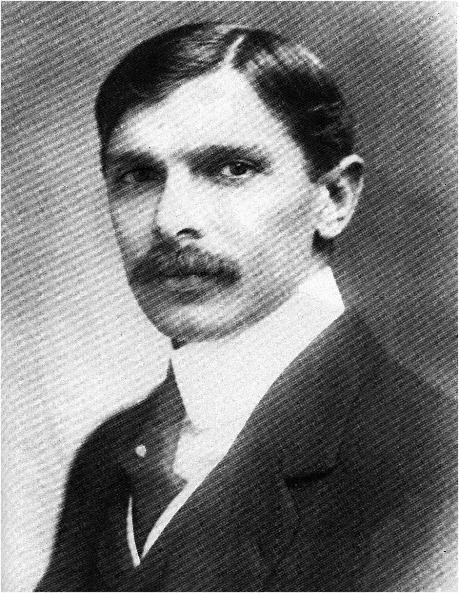

Muhammad Ali Jinnah

A Young Mr.Jinnah during his young advocacy days
Important Glimpses of Jinnah's Life
1876:
Born in Wazir Mansion
1895:
Became a Barrister from Lincoln's Inn Bar-At-Law
1906:
Joined Indian National Congress
1913:
Joined All-India Muslim League
1916:
Successfully built consensus
1919:
Resigned from Imperial Legislative Council as protest to Rowlatt Act
1940:
Passed the Pakistan Resolution at Manto Park, Lahore
1947:
Became the First Governor-General of Pakistan
1948:
Passed away on 11 September